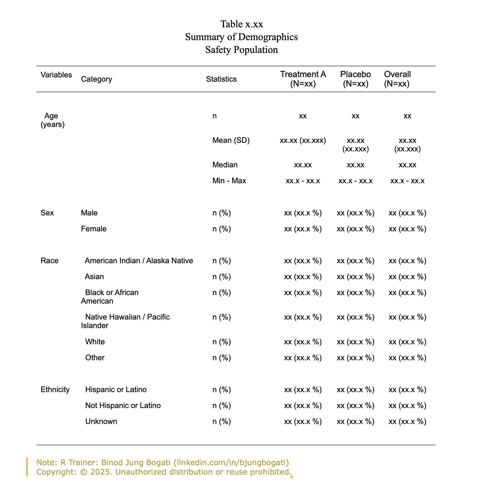

Introduction to Clinical Standards
Binod Jung Bogati
February 24, 2026
Know Your Instructor

- Expertise in R, SAS & Python for clinical research
- Nepal based consultant for clinical research teams (Pune / Banglore)
- Hands-on experience with clinical data standards (SDTM, ADaM, TLF)
- Strong background in regulatory-compliant data preparation & submissions
What are TLFs?
TLF stands for Tables, Listings, and Figures.
What it is: The final output of the statistical analysis. This is what goes into the Clinical Study Report (CSR).
The Goal: To present the results of the clinical trial in a clear, interpretable format for clinicians, regulators, and the public.
Breaking it down:
Tables: Summary of data (e.g., “Table 14-1.1: Summary of Adverse Events by Treatment Group”).
Listings: Line-by-line data of individual patients (e.g., “Listing 16-2.1: Listing of Patients Who Died”).
Figures: Graphical representations (e.g., “Figure 14-3.1: Kaplan-Meier Plot of Overall Survival”).
